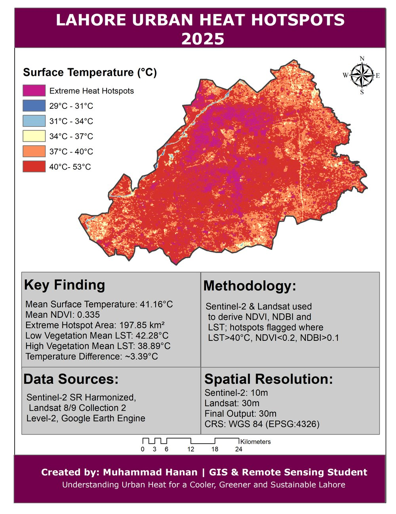
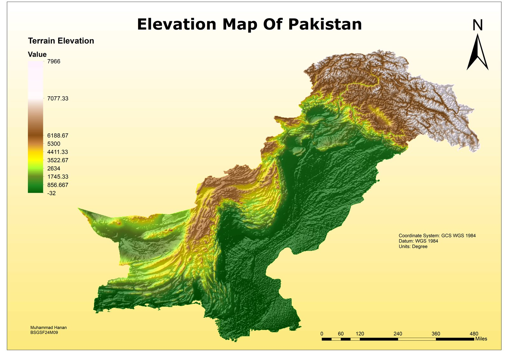
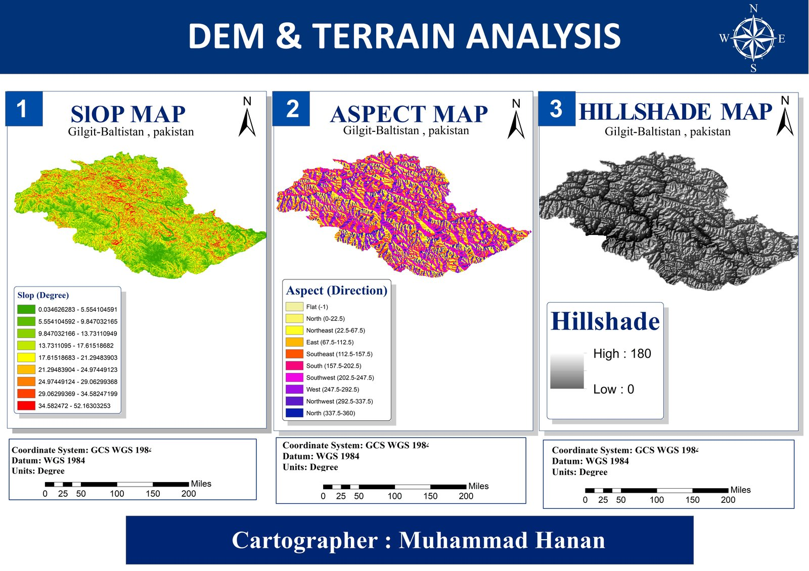
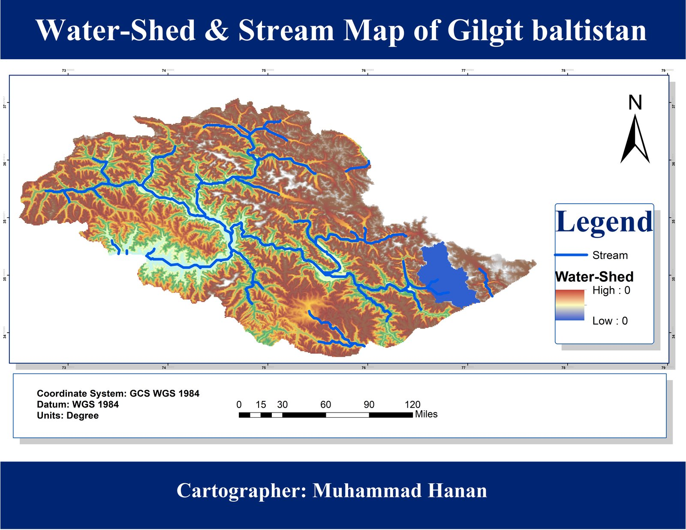

About
I'm a Geographic Information Systems student at the University of the Punjab, Lahore, with a growing focus on remote sensing, spatial analysis, and GeoAI.
I work with geospatial data to understand real-world problems and turn complex spatial information into clear maps and analytical insight. My work so far spans satellite image analysis, land use and land cover classification, environmental analysis, cartography, and Google Earth Engine workflows.
I'm continuing to build my skills in Python and geospatial technology, working toward combining GIS and artificial intelligence into practical, data-driven solutions for real-world challenges.
University of the Punjab, Lahore — 2024–2028 (5th semester)
Skills
What I work with, day to day.
GIS & Spatial Analysis
Remote Sensing
Programming
Tools & Data
Projects
A few things I've mapped and measured.
Google Earth Engine + QGIS
Lahore Urban Heat & Vegetation Analysis
Mapping how vegetation cover and land surface temperature relate across Lahore, using Sentinel-2 vegetation indices and Landsat thermal data to locate urban heat hotspots.
Vegetation area — Low: 451.16 km² · Moderate: 915.41 km² · High: 317.75 km²
Avg. LST by vegetation class — Low: 42.28°C · Moderate: 40.78°C · High: 38.89°C
Mean NDBI — 0.0021

Final map output — click to view full size.
View full project →Google Earth Engine + Sentinel-2 + Random Forest
Land Use / Land Cover Classification
Classifying land cover from Sentinel-2 imagery using a Random Forest classifier trained on labeled samples across five land cover classes.
QGIS + Sentinel-2 + SCP / Random Forest workflow
Islamabad LULC Analysis
A QGIS-based classification workflow for Islamabad: training samples built from Sentinel-2 imagery, classified land cover, and supporting index analysis for water and built-up areas.
View full project →Coming Next
Lahore Urban Flood Risk & Safe Route System
A planned project combining rainfall, elevation, drainage and land cover data to model flood risk across Lahore, then generate safer travel routes around high-risk zones.
Other Work
Cartography & Mapping



Research
"Integrating Artificial Intelligence with GIS for Land Use and Land Cover Classification: A Comprehensive Review"